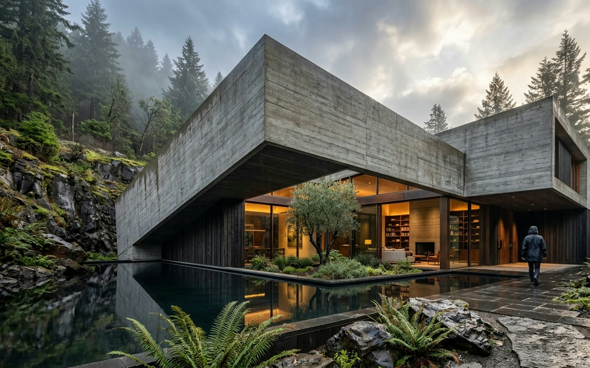
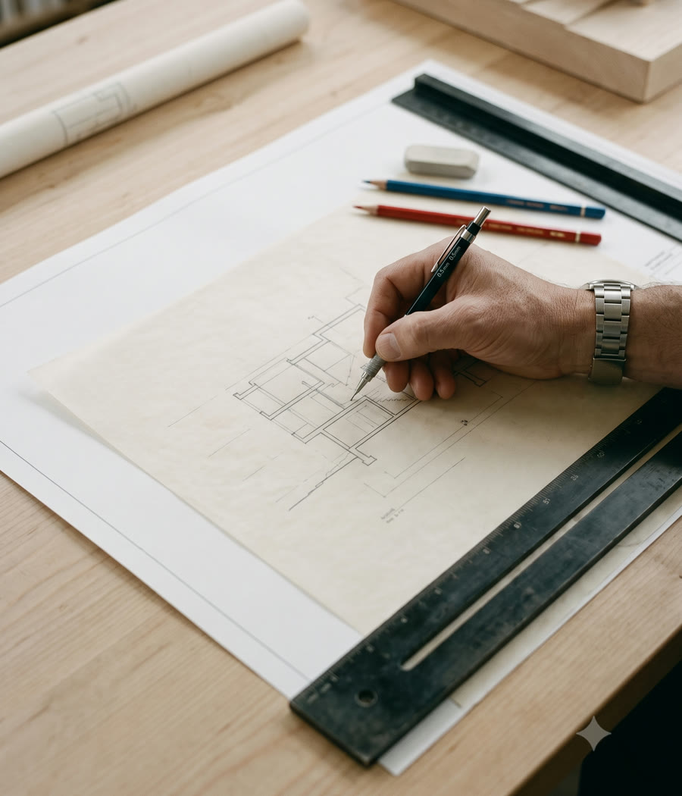
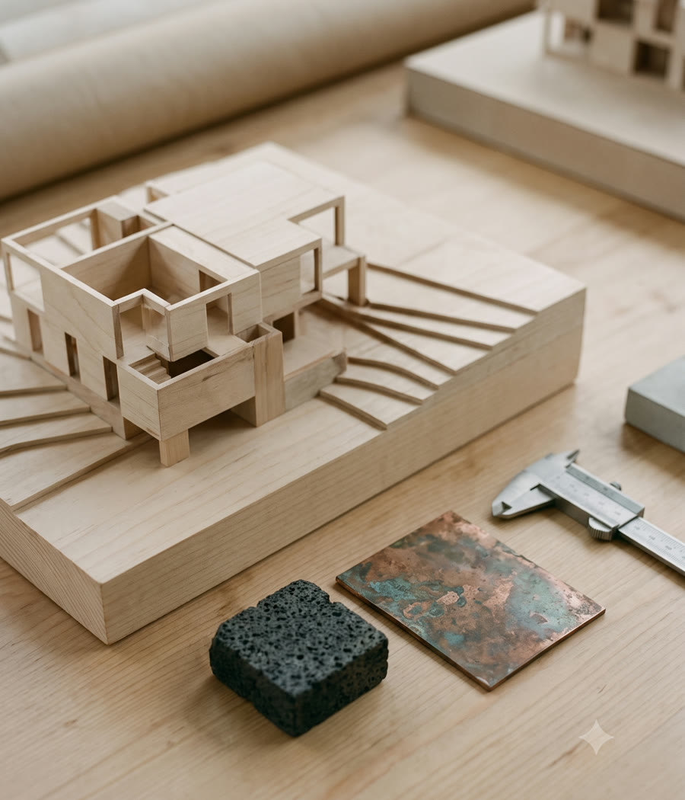
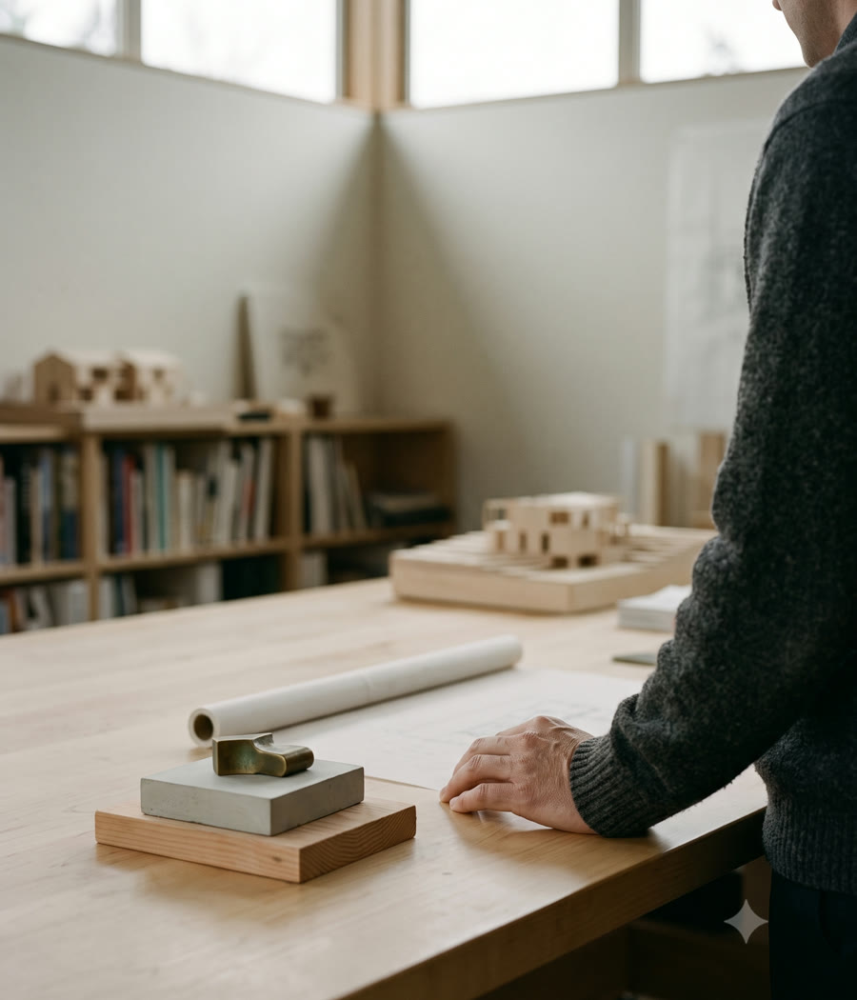
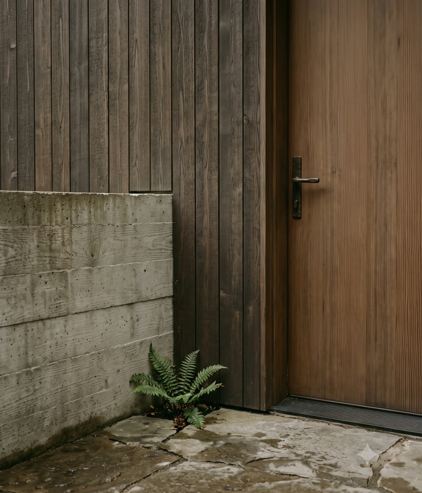
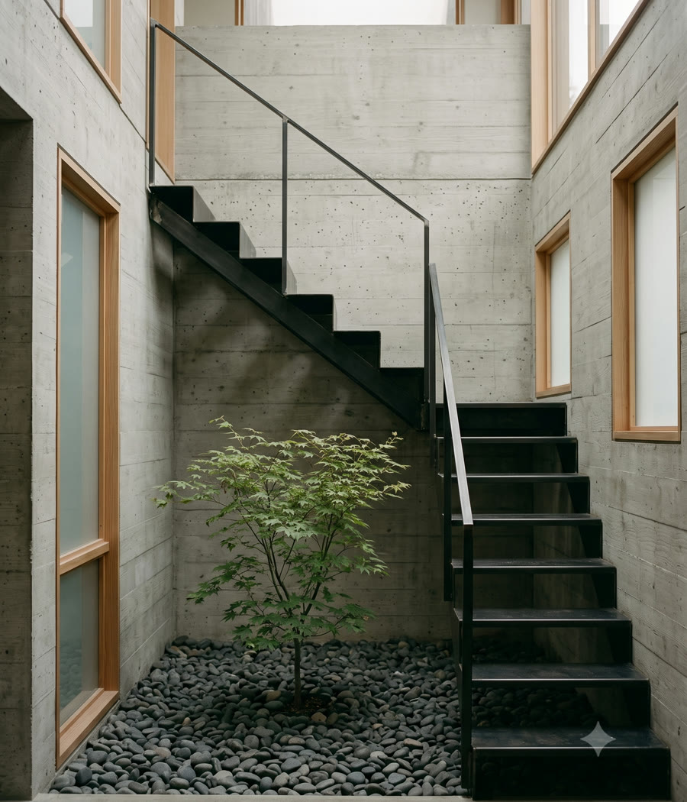

Meridian Atelier — architecture and interiors studio in Portland, Oregon

Meridian Atelier shapes calm, enduring homes in step with the land they stand on.
Featured Projects
(05)
View allOur Process
Studio-

Every project opens with time on the land. We walk the site in different light and weather, learning how it drains, where the wind settles, and what the place quietly asks for.
Alongside, we listen to you — routines, rituals, the rooms you return to — so the brief is written by the site and the people together.
-

We distil what we heard into one clear idea — a section, a courtyard, a line of light — and test it in sketches and rough models until it holds.
A strong early concept keeps every later decision honest, from structure to hardware.
-

Builders, engineers and craftspeople join the table early. Shared drawings and open budgets keep the team moving in one direction without surprises.
We stay on site through construction, resolving details where they are actually built.
-

We draw buildings the way they are made: honest materials, visible joints, weight where weight belongs. Stone, timber and plaster are chosen to age well, not to photograph once.
The result should feel inevitable — as if it could not have been otherwise.
-

Our work does not end at handover. We return with the seasons, watching how the house settles into its ground and its owners settle into the house.
Small adjustments over the first years are part of the commission — a building is finished only once it is lived in.
Planning a home, a retreat, a place of your own? We would be glad to hear about it.
610 Alder Bend Road
Portland, OR 97209
Every commission at Meridian Atelier begins with a conversation — about the site, the light, and the life you imagine there. We take on a small number of projects each year so that a principal stays close to every one of them.
Write to us with whatever you have: a parcel map, a few photographs, a rough budget, an early idea. We will reply within a few days with our honest thoughts on how to begin.